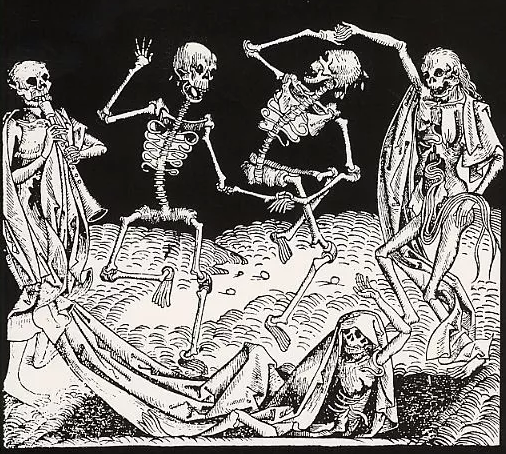

1 -A Noite Eterna
No fundo sujo de um bar sujo chamado Clone, no centro da cidade, proximo a boca do lixo, o tempo parecia ter parado. A melancolia se misturava com a fumaça de cigarros vagabundos. Lá fora, uma tempestade de verão castigava calçadas e ruas. O lugar era um ninho para almas perdidas e a casa estava cheia. Em meio a tantos bêbados já cansados da noite vazia, uma mulher ia levantar a voz.
Solange, tinha um olhar envolvente, estava rodeada por pequenos grupos de pessoas, algumas eram estranhas pra ela, outras conhecidas. Sentada, com cara de quem carrega o mundo nas costas mas não se dobra, ela naturalmente atraia olhares curiosos e admirados enquanto a luz amarela do boteco dançava sobre as mesas, criando sombras que giravam.
Seus olhos eram como brasas, encaravam o vazio de quem já viu demais, o pior que a vida tem pra dar. A pele negra, marcada pelo tempo, muitas dores e algumas alegrias, por histórias que não encontram espaço nos livros. Mas ela própria talvez pudesse contar sua historia, não escrever um livro mas compartilhar a mais terrível verdade que queimava dentro dela.
“Silêncio colega! Deixem-me contar uma história”, começou, enquanto seus olhos de fogo ainda brilhavam com tristeza e fascínio.
“Um causo real, que me aconteceu bem aqui, nessa cidade, há alguns anos, debaixo dessa mesma lua que nos espia agora." Ela fez uma pausa, tomando um gole da pml, para que o álcool fortalecesse a coragem de mergulhar em seu passado. Rapidamente a atenção das pessoas convergia para ela.
Garçom, por favor, encha o caneco!
Todas as pessoas na sala fizeram silêncio

2 - Solange
"Ouçam bem: Santos, é a cidade do fanatismo e da perdição "
As ruas e becos escondem segredos que, se fossem contados, fariam até o crente mais crente desacreditar da fé. Nem aquela igreja em frente ao mar, supostamente um santuário, escapa da decadência.
Lá, no quarto do padre mais santo, a blasfêmia reina solta. Ele e sua amante, uma moça de reputação duvidosa como a de vocês. E ali, sobre a cama manchada de pecado, o pequeno Jesus Cristo crucificado assistia, em silêncio, coisas que até Deus duvida.
Era em Santos. Uma noite a lua ia bonita passeando pelo céu, noite morna de verão. Mas o fedor que subia das águas do canal do mercado, frio como a morte, me arrepiava o cangote. A noite estava bonita. Eu passeava só nas ruas, AS LUZES SE APAGARAM uma por uma nas casas e nos cortiços, eu ainda sentia o cheiro e até enxergava a fumaça do crack que alguém fumou ali e que subia tão alto que obrigava até a lua a fumar também. Nesse cantão da cidade sempre se juntam marginais e pessoas de vida vazia, mas nessa noite não tinha ninguém. A lua teve sono e se escondeu atrás das nuvens.

De repente, do nada mesmo, uma sombra apareceu numa janela daqueles cortiços que parecem ninho de rato. Uma figura jovem, até bonita de um jeito meio torto, com o rosto fechado numa tristeza de dar dó. Lágrimas escorriam, grossas como gotas que se condensam e escorrem nessa garrafa de cerveja gelada na minha frente. Me escorei na calçada, querendo enxergar melhor.
Mas aí, a figura sumiu, engolida pelo breu. Mas ai do silêncio, comecei a escutar um som, um canto, sei lá, mas não era qualquer canto. Era um chorar, um lamento que cortava a alma, um desvario, como se a própria loucura tivesse voz. Era um som escuro, triste, daqueles que a gente só espera ouvir em noite de ventania, um treco que dava arrepio até no mais duro. E cada nota que vinha daquela voz, parecia que roubava um pedaço da minha paz, e deixava um vazio amargo no lugar.

O canto parou. A figura surgiu na porta do cortiço. Lançou um olhar esperto para a rua. Não notou a minha presença e saiu. Eu não hesitei em seguir. A noite se aprofundava cada vez mais. A lua já estava totalmente escondida atrás das nuvens e de repente uma chuva desabou em gotas grossas, como uma cascata. Suas gotas pesadas golpearam o meu rosto, como as lágrimas amargas de dor da criança órfã, golpeiam o túmulo da mãe morta.
Eu segui o som da voz, que me atraía igual ímã. Eu queria ver melhor o rosto daquela pessoa, que cantava com tanta dor e paixão. Eu queria saber o que ela fazia naquele lugar, queria entender o que ela sentia, o que ela sofria, o que ela buscava…
Andamos infinitamente pelo labirinto das ruas do centro: estaria procurando um lugar para comprar drogas? Alguma coisa pra acalmar a alma talvez?... Finalmente a pessoa parou: numa rua larga, escura e vazia. Todo o quarteirão era cercado por um muro branco. A chuva parou. Do outro lado do muro eu enxergava cruzes e árvores. Se ajoelhou. Parecia estar com soluço, chorava? Mexeu em alguns galhos de um arbusto e entrou por um buraco quase imperceptível que havia no muro.
Contei até trinta e passei também. Me enfiei nos arbustos, num buraco que mais parecia um túnel dos infernos, cheio de planta, espinho, e coisa que arranha. A passagem era um aperto só, me senti no fundo do cu do mundo, parecia que ali tempo se dobrava sobre si mesmo. Cheguei no final, e ao sair do outro lado, o caminho se abriu, a lua apareceu de novo, iluminando as…
Solange de repente interrompe a sua falação, sua respiração intensa se fundia com murmúrio inquieto da audiência que a cercava, pendurada em cada palavra. A luz amarela e tremulante do Clone não era suficiente para iluminar seu rosto, enquanto alguns espectadores e espectadoras se inclinavam um pouco mais para frente, tentando capturar as próximas palavras antes mesmo que elas fossem pronunciadas.
Então Solange, levantou o copo com um movimento trêmulo, mas decidido.Com um gesto rápido, ela inclinou o copo e, em um só gole, esvaziou-o de uma vez. Solange parecia mais bêbada, seus olhos embrasados brilham.
Imediatamente o garçom encheu o copo novamente.
“A lua iluminou sabe o que, gente? As porra das catacumbas e mausoléus, era um cemitério mesmo”, continuou Solange. “O canto da pessoa que eu segui ecoava ao fundo e se entrelaçava agora com os murmúrios da noite, criando música.”
A NOITE ERA LUZ E SOMBRA E DE FARRA miavam vinte gatos vadios, guardiões da escuridão, que miavam suas cantorias igual um coral. Choros e gemidos teciam a melodia com o vento, enquanto ossos pareciam com o barulho das folhas secas. As estátuas de anjos pousadas nos túmulos, dessas que se vê nos cemitérios, agora deformadas pela noite, mais pareciam com demônios, seus vultos dançavam uma valsa animada com as sombras. Uma dança bem diferente. E no meio dessa zorra toda, segurem a onda que o que vou falar agora é de cair o cu da bunda: Alguns túmulos estavam abertos e os cadáveres dançavam do lado de fora. Era uma festa e no centro dessa festa, e talvez vocês achem que é papo furado, eu não tô nem ai, mas é papo sério: eu vi a própria Morte, a filha da puta tava lá, toda empinada, parecendo regente de orquestra, com um violino de ossos humanos

Suas mãos, tão puras quanto a noite, se abriam para mim em uma espécie de convite e também uma sentença. Seus olhos vazios encontraram os meus, e em um sussurro que parecia atravessar as eras, pude escutar uma verdade tão antiga quanto o tempo: "Solange, eu sou como o carnaval, eu junto ricos e pobres para uma mesma dança. Mas, enquanto a festa de vocês é uma mentira que acaba na quarta-feira, minha valsa sombria ecoa pela eternidade."
Aí eu apaguei. Voltei só quando o sol já tava todo amarelão de papo pro ar, quente pra caralho e o despertar, olha só que beleza: foi na base da porrada, com um coveiro desgraçado me chutando e me tratando como se eu fosse um pedaço de merda.
"Acorda sua bêbada imunda!" ele berrava, sacudindo a pá como se fosse decepar minha cabeça ali mesmo.
"Cai fora daqui, sua rata de cemitério, antes que eu te faça um favor, te mate e enterre ai mesmo!"
Minha cabeça ainda tava rodando da viagem da noite, mas alguma coisa dentro de mim acordou pior que bicho ferido. Olhei pra ele calmamente, os olhos mais frios que gelo, e soltei:
"Escuta só, se você tentar encostar em mim, quem vai pro buraco é você, seu merda. Isso te prometo." Desaquendei minha faca, a mão já tava no cabo da navalha, pronta pro que desse e viesse.
"Vai encarar?"
O coveiro engoliu em seco, recuou um passo e baixou a arma dele. Olhei pra trás. Foi aí que me toquei onde a porra toda tinha acontecido. "Cemitério do Paquetá", dizia uma placa.
Virei de volta pra falar com o babaca uma última vez, mas só vi a pá dele vindo direto na minha cara. Nem consegui me esquivar, só deu tempo de pensar "Ah, fudeu", antes de tudo escurecer de novo.
Fui parar no hospital, acordei sei lá quantos dias depois, cozinhei em febre. Disseram que tive um traumatismo craniano. Por semanas, fiquei fervendo, tendo em delírios, e nessas viagens, eu via ela, sempre aquela pessoa, passando e repassando na minha frente, e eu lá, feito besta, ouvindo soluços que pareciam rasgar minha alma.
Depois de um ano, voltei pra Santos. Aquela pessoa lá não saía da minha cabeça. Nada preenchia o vazio, nem os litros de bebida que eu entornava goela abaixo. Não importava se eu tava acordada, dormindo, sóbria ou de porre, a visão dela sempre vinha...
Numa noite, depois de uma farra sem fim, deixei a doutora Bárbara apagada na cama. Dei uma última olhada naquela moça de lábios úmidos, que mesmo dormindo ainda parecia gemer. Saí vagabundeando pela madrugada com a mente turva. Se a noite tava nublada ou escura, eu não sei. A última garrafa de Velho Barreiro tinha secado na mesa, e nos seus lábios de vicro eu bebi o último néctar da cana mais braba.
Pisei na areia da praia, seguindo com o olhar o vaivém daquele mar sem fim que, brilhava cor de chumbo. Cruzei a ponte meio sem rumo, e quando dei por mim, tava de cara com uma igreja, grande e bonita.
O brilho das estrelas iluminavam a praça que ficava de frente pra igreja. Lá no meio, tinha uma estátua que olhava pra mim, era um homem, podia ser um santo. Ele me olhava, era como se me conhecesse, apontando pra porta da igreja, me chamando pra dentro como se fosse uma promessa. Como se tivesse algo pra mim ali. Andei até a frente da igreja, a porta, por algum motivo tava só encostada, como se esperasse por mim. Meio que no automático, sem nem pestanejar, segui o dedo do santo e me enfiei igreja adentro.
De repente, me vi num saguão escuro, só a luz fraca de quatro velas, iluminavam um caixão entreaberto. Meti a mão e abri a tampa. Lá dentro, uma pessoa morta, inegavelmente morta, embrulhada em prata. Morta ou não, era a pessoa mais linda que já vi. Aquele rosto me lembrava uma ideia perdida... era ela! A visão do cemitério.
Era como se esperasse por mim. Fechei a porta. Peguei o cadáver em meus braços. Pesava como pedra. Algo acontecia, não sei se no calor do meu peito, ou no fogo do meu desespero, ou no desespero do fogo, aquela pessoa parecia se reanimar.
Era um desatino, mas segurando aquele frio nos braços, senti como se um calor vindo de mim, ou talvez do meu desejo doido, desse um sopro de vida àquela frieza. No meio da minha insanidade, parecia que ela reagia ao calor do meu peito, ao fogo do meu beijo.
De repente ela abriu os olhos, apertou meu braço e num respiro seus lábios azuis ficaram coloridos de novo. Aquela pessoa morta já não estava tão morta, mas sim desmaiada… Você já ouviu falar em catalepsia? Um pesadelo horrível, transforma gente acordada de repente em múmia. Um sonho gelado que transforma vivo em morto vivo.
Ela ia voltando, arranhando o caminho de volta da morte, cada vez que acordava, parecia morrer de novo. Dormia como uma criança. Ao lado da porta da igreja, percebi algo que não tinha visto antes.
Igual um trapo humano estendido no chão, havia um corpo no chão. Esse estava vivo e, roncava igual um porco, afogado na cachaça, com a garrafa de pinga grudada na mão como se fosse extensão de si, e na outra mão fechada uma chave - Olhei pra o rosto e reconheci prontamente, Era o coveiro, o mesmo que um ano antes me tinha me enfiado a pá na cara, estava um lixo, parecia ter envelhecido uns dez anos.
Na sua bebedeira o coveiro devia ter esquecido de trancar a igreja. Essa era a chave da minha felicidade.
Por um instante Solange sorri. Bebe um gole de PML e parece achar graça. Os olhos são fogo puro.
“Sem medo, nem dó, nem culpa, deslizei uma vela até a cortina e deixei o fogo fazer o serviço, o fogaréu saiu lambendo o pano como quem não come faz tempo.”
A chave, arranquei suavemente da mão do coveiro que mergulhado na manguaça, nem piscou. Carregando a pessoa que voltou dos mortos, passei pela porta, e tranquei a igreja de fora pra dentro.
Andei um bocado, quando já tava longe dei uma parada, só pra espiar a desgraça completa. O fogo tava devorando a igreja, fazendo um espetáculo do caralho, as chamas altas pra cacete tingiam até o céu de laranja. Era como uma festa. Aí, escutei um som que me gelou até os ossos, aquele violino da morte começou a tocar de novo.
Em cima da igreja eu via o coveiro, agora mais espírito do que gente, tava ali, dançando e rindo com sua garrafa de pinga.. O padre com sua amante apareceram também, se atiraram naquela dança dos fodidos, girando num ritmo que fazia té a decência se revirar no túmulo. Era como se cada passo da dança fosse um cuspe na cara da vida, o retrato do pecado, num jeito que faria até santo parar pra olhar.
Do outro lado, eles me mandaram aquele aceno. "Nos vemos em breve", pensei.
Eu estava cansada, cada pedaço de mim tremendo num misto fudido de medo e canseira. A pessoa viva nos meus braços pesava mais que nunca. Mas me confortava uma ideia, um ditado desse que dizem por aí: "Deus só te dá um fardo que tu guenta carregar".
"Solange" será que essa história não é um conto não?
Pro inferno, é claro que não.